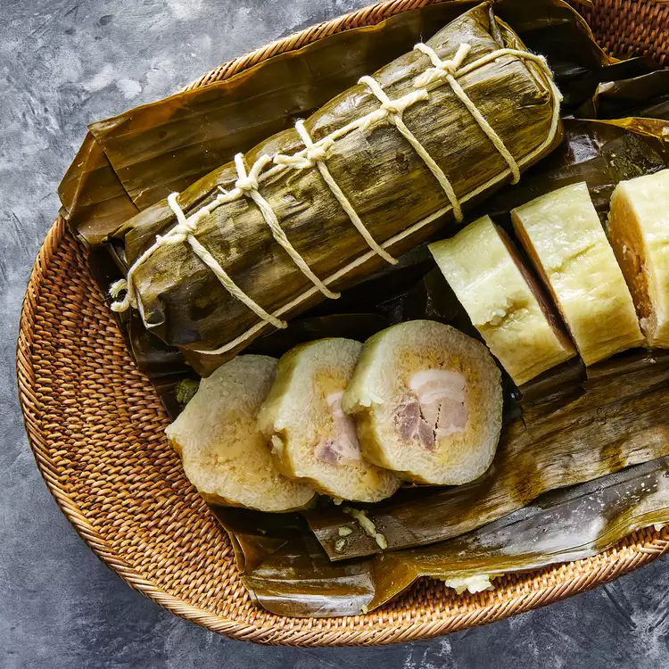

Bánh Tét

Description
Bánh tét and bánh chung (the square cake version) are available year-round and are traditional for the Lunar New Year in Vietnam. It's a sticky rice cake with various fillings, some are sweet and some are savory. Mung beans, pork, and sticky rice are the core ingredients in this recipe. Raffia string is usually used to tie the cakes but I've used kitchen twine. Also, traditionally these are more elaborately trussed than tied as I did here to simplify. I wrapped the cakes in foil, that's Andrea Nguyen's move. Once the cakes are cooked you can wrap them in gold or red plastic ribbon for luck in the new year.
Ingredients
- 5 cups uncooked glutinous white rice
- 1 tablespoon fine sea salt, divided
- 1 pound pork belly, skin removed
- 3 tablespoons fish sauce
- 2 large shallot, minced
- 1 tablespoon white sugar
- 1 teaspoon black pepper
- 1 cup dried mung beans
- 3 cups water
- 2 (16-ounce packages) frozen banana leaves, thawed
- kitchen twine
Steps
- Place rice in a colander; rinse under cold water, stirring rice with your fingers, until water runs clear, about 2 minutes. Transfer rice to a large bowl or container; add water to cover by 2 inches. Cover and refrigerate for 12 hours.
- While rice refrigerates, cut pork into four 1 1/4x5-inch strips. Place pork strips, fish sauce, shallot, sugar, pepper, and 1/4 teaspoon salt in a large zip-top plastic freezer bag. Seal bag, removing as much air as you can. Gently massage pork to distribute marinade. Refrigerate for 12 hours.
- Place mung beans in a colander; rinse under cold water, stirring with your fingers, until water runs clear, 1 to 2 minutes. Transfer mung beans to a small saucepan; add remaining 1/2 teaspoon salt and 3 cups water. Bring to a boil over high heat, stirring occasionally. Reduce heat to medium-low, and simmer, stirring occasionally, until mung beans are creamy, no longer hold their shape, and begin to stick to the bottom of the pot, 16 to 18 minutes.
- Scrape beans into the bowl of a food processor. Process until smooth, about 10 seconds. Spread pureed mung beans onto a baking sheet. Chill until cold, about 45 minutes. You'll have about 2 cups mung bean puree.
- While mung beans cool, gently rub banana leaves with a damp cloth to remove dirt. Using kitchen shears, cut fibrous strings off each banana leaf. You only need 12 banana leaves, but you cannot use torn leaves, and you'll want to set aside wider banana leaves for wrapping, so you'll need extras.
- Remove pork from marinade; discard marinade. Moisten a work surface with a damp paper towel. Lay a 14-inch long piece of plastic wrap on moistened work surface, with the long edge facing you. Using a small offset spatula, spread 1/4 cup mung bean puree in center of plastic wrap to form a 6x4-inch rectangle. Center 1 pork strip on top of the mung bean rectangle. Spoon 1/4 cup mung bean puree over the pork, and using moistened hands, spread puree all over pork to mostly enclose. Lift bottom edge of plastic wrap to begin wrapping pork mixture; continue to roll into a log. Once roll is complete, hold the ends of the plastic wrap and roll pork mixture on the work surface towards you to form a tight cylinder, about 5 inches long; set pork roll aside. Repeat wrapping procedure with remaining 1 1/2 cups mung bean puree and remaining 3 pork strips.
- Drain rice and transfer to a large bowl. Stir in 2 1/4 teaspoons salt. You'll have about 9 cups of drained rice.
- Cut 36 (14-inch) lengths and 8 (28-inch) lengths of kitchen twine; set aside.
- Stack 3 wide banana leaves (dull-side down with lines on the leaf running parallel to the edge of the work surface) on top of each other to cover an 11-inch wide area. You will probably need to overlap some of the smaller leaves in order to form the desired shape. Using kitchen shears, cut banana leaf stack to form an 11x14-inch rectangle, with the 11-inch side facing you; discard trimmed leaves and restack leaves if needed. Spoon 3/4 cup of rice onto the center of banana leaf stack and spread into a 6x4-inch rectangle.
- Unwrap 1 of the pork rolls and center on top of rice rectangle. Spoon 3/4 cup rice over pork roll. Slowly wrap the short edge of banana stack closest to you over pork roll, stopping to redistribute rice enclosing the pork, until it is snug and completely wrapped. Tie banana leaf cylinder in the center with 1 (14-inch) piece of kitchen twine to secure. Working with 1 end of the cylinder only, fold banana leaf ends over cylinder. Hold ends in place and then stand cylinder up on the folded end. Spoon 1/4 cup of rice into open end; gently tap the sides of banana cylinder and tap back and forth to settle rice. Seal the open end of banana cylinder by tucking the sides of banana leaves against rice mixture like you are wrapping a present and folding flaps down. Center 1 (28-inch) string over folded end and hold sides of string snuggly against the cylinder. Hold folded end in place and flip cylinder. Open folded end.
- Spoon 1/4 cup of rice into open end; gently tap the sides of banana cylinder back and forth to settle rice. Seal open end of banana cylinder, tucks sides of banana leaves against rice mixture like you are wrapping a present, then fold flaps down. Bring edges of string up together and tie against folded flaps; don't tie too tightly. Center 1 (28-inch) string on 1 folded end perpendicular to first string, and hold sides of string snuggly against cylinder. With your other hand, hold bottom end in place and flip cylinder. Bring edges of string up together and tie against folded flaps; don't tie too tightly. Lay banana cylinder on work surface and cut off center string (the first string we tied) with kitchen shears; discard. Using 5 (14-inch) pieces of kitchen twine, tie banana cylinder working from center out at 1 1/2-inch intervals until you reach the ends. Wrap banana cylinder tightly in a 18-inch long piece of aluminum foil. Secure center and folded ends of foil with 3 (14-inch) pieces of kitchen twine. Repeat wrapping procedure with remaining banana leaves, rice, pork rolls, and kitchen twine.
- Place cylinders in a large stockpot (you may need to stand cylinders on their ends.) Fill the pot with water to 2 inches below the rim. Place a heat-proof lid on top of the cylinders to keep them submerged. Cover, and bring to a boil over high heat. Uncover and continue to gently boil at medium heat, turning every 2 hours, until the internal temperature is at least 200 degrees F (92 degrees C), about 6 hours. Add additional boiling water as needed throughout cook time to keep the water level 2 inches below the pot rim. Using tongs, transfer cooked banh tet to a baking sheet and let cool for at least 3 hours, or chill overnight. Remove and discard foil and banana leaves. Slice into rounds and serve. For clean slices, dip knife into warm water, and wipe clean often.